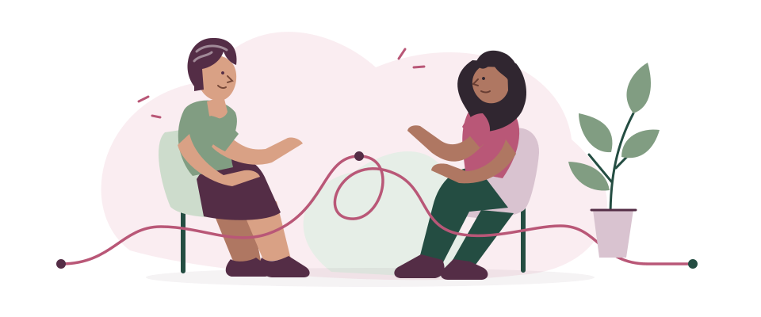

Las necesidades son distintas.
Por eso la decisión de solicitar, postergar o no buscar apoyo tiene un lugar en el recorrido.
El proceso no siempre termina cuando acaba el tratamiento. Tus emociones también importan, y no tienes que atravesar esta etapa sola.
Prueba la experiencia con datos de ejemplo.

El desafío
Volver a la rutina después del tratamiento puede abrir preguntas. Cuando decides buscar apoyo, saber a quién contactar y cómo coordinar una hora debería ser más claro.
Las entrevistas del equipo identificaron barreras de información, tiempo y coordinación. Desde ahí nace esta propuesta de acceso a apoyo psicológico.
Exploración de necesidades: S01 y S07. Foco actualizado: S10.
La propuesta
Solicita apoyo, recibe un mensaje de ejemplo y elige una primera hora psicológica. Prueba cada paso aquí.
Eliges cómo prefieres el contacto y la modalidad de la sesión.
Ves cómo coordinación te contactaría por correo o WhatsApp.
Revisas las opciones o pides otra alternativa si no te acomodan.
Te llevas el detalle de la hora y sabes qué viene después.
Recorrido académico de apoyo psicológico. No activa servicios reales. S09 y S10.
Pruébalo aquí
Recorre la experiencia completa. Verás una respuesta a tu solicitud y podrás llegar hasta una cita de ejemplo.
Empecemos a tu ritmo
Prueba cómo solicitarías una primera sesión de apoyo psicológico después del tratamiento. Usaremos una identidad de ejemplo.
No necesitas escribir tu nombre, teléfono ni antecedentes de salud.
Solicitud recibida · Simulación
Así se vería el contacto del equipo de coordinación para ofrecerte una primera hora. Todavía no hay una cita reservada.
Vista previa: no se envió ningún correo ni WhatsApp.
Elige lo que te acomode
Primera sesión de apoyo psicológico . Atención con un profesional de psicología en el escenario de ejemplo.
Los horarios y la duración son ejemplos. No corresponden a cupos reales ni generan cobros.
Cita confirmada · Solo en esta simulación
En un servicio real recibirías este comprobante por el canal elegido. Aquí puedes revisar y descargar el ejemplo.
No existe una reserva real ni se ha enviado un mensaje. El comprobante es solo para la presentación.
Coordinación pendiente · Simulación
No elegiste una hora. Tu solicitud permanece pendiente; no se marca como cita confirmada.
La hora sigue pendiente. El siguiente paso corresponde a coordinación: revisar alternativas y contactarte por el canal elegido. En esta demostración no se enviará un contacto real.
Tú decides cuándo
Prototipo navegable, sin validación con usuarias. Diseño S09 y alcance S10. Abrir la demostración en su propia página.
Antes de dar el paso
No necesitas tener todo claro para explorar el recorrido.
El proyecto se enfoca en mujeres de 50 a 59 años, usuarias de FONASA/GES en la Región Metropolitana, durante los primeros 12 meses después del tratamiento activo por cáncer de mama. Es un foco de diseño; no existe un convenio con FONASA ni un servicio de atención operativo.
No. La demostración utiliza datos ficticios y solo pide preferencias de contacto y modalidad. No solicita síntomas, diagnósticos ni antecedentes de salud.
No. Verás un mensaje de ejemplo dentro de esta página. En el servicio propuesto, ese contacto permitiría coordinar la primera hora con un profesional de psicología.
Puedes solicitar otra alternativa. La simulación mantiene el estado “Coordinación pendiente” y explica quién debería retomar el contacto, sin confirmar una hora inexistente.
No realiza cobros ni pagos. Puedes probar las modalidades y los horarios de ejemplo para entender cómo funcionaría el agendamiento. No estás contratando ni reservando una atención real.
Validación
Las entrevistas orientan el problema. Probar este recorrido con usuarias es el siguiente trabajo.
Cuatro mujeres y una profesional de oncología.
Son relatos de perfiles diversos; no representan a todas las sobrevivientes ni validan este prototipo.
Registros de exploración S07. Confirmación del equipo: S08.
Resultados de la exploración
Hallazgos cualitativos. Todavía no hemos medido acceso efectivo, reducción de espera ni impacto en salud mental.
Por eso la decisión de solicitar, postergar o no buscar apoyo tiene un lugar en el recorrido.
La propuesta muestra un contacto de seguimiento y una elección de horario.
La experiencia distingue solicitud, coordinación pendiente y cita. Una reserva no es una sesión realizada.
Aprendizajes
El feedback docente nos llevó a acotar OncoNova a salud mental y a completar lo que ocurre después de solicitar apoyo.
El prototipo ahora permite ensayar un contacto y una cita. Su funcionamiento en pantalla no demuestra todavía que el servicio pueda operar en una institución.
Feedback reportado por el equipo y decisiones de esta versión: S10.
Próximos pasos
Detrás de esta historia
Los datos de esta página provienen de registros del equipo. Compartimos una síntesis anónima y distinguimos entrevistas, decisiones y simulación.
Exploración del problema y cinco entrevistas. Septiembre de 2026; foco entonces psicológico.
Ideas de solución y estimaciones iniciales. No son mediciones de resultados.
Elección de un acompañamiento voluntario y su flujo propuesto.
Indicadores y metas. Los resultados no están completados.
Plan de prueba en papel del 6 de octubre de 2026. No es un resultado de validación.
Antecedente de julio de 2026. Su simulación corresponde a una propuesta anterior.
Ver el póster completoCinco conversaciones reales, según confirmación del equipo. Hallazgos cualitativos y perfiles diversos. Los originales se conservan privados.
Decisión histórica del 10 de octubre de 2026: derivación prioritaria a distintos apoyos. El foco se actualiza a salud mental en S10. Sin institución piloto confirmada.
Prototipo creado con apoyo de IA y actualizado el 14 de octubre de 2026: solicitud, mensaje, elección de horario y confirmación simulada. Aún no validado con usuarias.
Explorar la maquetaComunicado por el equipo el 14 de octubre de 2026: acotar a salud mental, mejorar la conexión visual y completar una simulación de acceso a la primera hora psicológica. Es una decisión de diseño, no una validación con usuarias.
Prototipo académico. Las solicitudes, mensajes y citas son simulados. No se envían datos, no se reservan horas reales y no se presta atención de salud.